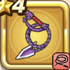

あくまのムチ
攻略班 5.5点 / スパークショットマヌーサドルクマ
くわしい特徴
【レベル別習得スキル】 Lv1スパークショット（消費MP：5）敵1体に威力120%のイオ属性体技ダメージを与えたまに幻でつつみこむ Lv8マヌーサ（消費MP：16）敵全体を幻でつつみこむ Lv20ドルクマ（消費MP：13）巨大な闇のチカラで敵1体にドルマ属性の呪文大ダメージを与える Lv28悪魔系へのダメージ+5% Lv36さいだいMP+8 Lv40こうげき魔力+8 【限界突破スキル】 1凸じゅもんダメージ+3% 2凸じゅもんダメージ+3% 3凸じゅもんダメージ+3% 4凸じゅもんダメージ+3%